Intro to Today’s Lab
During today’s lab, you’ll apply the concepts discussed during this week’s lecture. Each lab consists of a range of tasks, with corresponding questions you can answer. Please note that the questions are not required and not marked, although they do provide a helpful source of formative feedback that will help you gauge your understanding.
Learning Objectives
At the end of this lab, you will be able to:
- Identify hypotheses which may be tested using ANOVAs
- Check assumptions for a one-way ANOVA
- Use SPSS to perform one-way ANOVAs
- Interpret and report results from one-way ANOVAs
If you also complete the bonus material, you’ll be able to:
- Produce a box-plot to visualise the results from a one-way ANOVA
- Run an appropriate power analysis for both one-way and repeated-measures ANOVAs
- Check assumptions for a repeated-measures ANOVA
- Use SPSS to perform one-way and repeated-measures ANOVAs
- Interpret and report results from repeated-measures ANOVAs
This Week’s Study
You’ll be working with data adapted from studies on emotion recognition (see here). Specifically, you’re testing whether mask-wearing during COVID influenced children’s ability to correctly identify emotions during social interactions. You’ll be investigating this through two separate experiments.
Experiment 1 Overview
In the first experiment, you’ll investigate whether the region
of the face covered affects a child’s ability to recognize emotions
conveyed by facial expressions. You recruited a sample of primary-school
aged children. All participants were presented with photos of people
making stereotypical facial expressions associated with 5 different
emotions (happiness, sadness, fear, anger, disgust). However,
participants were grouped into one of three conditions. Participants in
the first condition viewed unobstructed faces Participants in the second
condition viewed faces wearing sunglasses so that the eyes were
obstructed. Participants in the third condition viewed faces wearing
masks so that the mouth was obstructed (see examples below).

Participants viewed 10 photos per emotion, for a total of 50 photos. Photos were presented in random order for each participant.
You can download the dataset from the first experiment here. It contains the following variables:
| Variable Name | Description |
|---|---|
| ID | Participant ID |
| Gender | Levels: 1 = Female; 2 = Male |
| Age | Age in years |
| Group | Levels: Control; Mouth Obstructed; Eyes Obstructed |
| Correct | Total number of correctly identified emotions; possible scores = 0 - 50 |
Your Tasks
- \(\ \) Identify your independent and dependent variables for this experiment.
- \(\ \) State your research question for this experiment.
- \(\ \) State your hypotheses for this experiment, both using words and statistically.
Click here for a hint
In your research question, you should mention the independent variable, the dependent variable, and the population being studied.
To state hypotheses statistically, you should structure them in the framework of the statistical values being tested.
Click here for the solution
Possible Research Questions:
Does the region of the face being obstructed affect the ability of school-aged children to make emotional inferences?
Do different types of facial coverage impact a child’s ability to correctly identify emotions?
Independent Variable: Region of Face Obstructed (3 levels: Control/Mouth/Eyes)
Dependent Variable: Correct Identifications of Emotion
Hypotheses:
General:
\(H_0:\) Facial obstruction will not affect the ability of school-aged children to make emotion inferences.
\(H_1:\) Facial obstruction will affect the ability of school-aged children to make emotion inferences.
Statistical:
\(H_0: \mu_{control} = \mu_{eyes} = \mu_{mouth}\)
\(H_1:\) at least one \(\mu \neq\) the other \(\mu\)s
Experiment 1 Power Analysis
Recall the effect size measure for ANOVA, \(\eta^2\):
| Variable Name | Magnitude of \(\eta^2\) |
|---|---|
| Weak | 0.01 |
| Moderate | 0.06 |
| Strong | 0.14 |
Your Task
- \(\ \) Run a power analysis using \(\alpha\) = .05 and power = .8 to determine the sample size necessary to detect a moderate effect ( \(\eta^2\) = .06) using a One-Way ANOVA.
There are many possible measures of effect size that are used across statistical tests. The software that we use to run power analyses, WebPower, uses \(f\) as its measure of effect size for ANOVA. In SPSS, it uses \(\eta^2\), so we need to convert \(\eta^2\) to \(f\) before running the power analysis. You can do this with the following equation:
\[f = \sqrt{\frac{\eta^2}{1-\eta^2}}\] Be sure to use \(f\) when entering the effect size into WebPower.
Click here to use WebPower to run your analysis.
Click here for a hint
Unlike the power analysis for \(t\)-tests, this power analysis
requires/outputs the total number of participants, rather than the
number of participants per group.
If you’re completely lost, you might find the section on One-Way ANOVA in the WebPower manual helpful.
Click here for the solution
Navigate to the WebPower site and click One-Way ANOVA:

Number of groups refers to the number of independent
groups you’re comparing. In this case, you have 3 (Control/Eyes
Obstructed/Mouth Obstructed). You’ll leave the Sample Size option blank,
as that’s the value you want to calculate. To compute the effect size,
\(f\), you’ll do the following:
\[f = \sqrt{\frac{.06}{1-.06}} = .25\] You can enter in the appropriate values for \(\alpha\) and power. When you’re finished, click ‘Calculate’ and you should see the following results if you’ve entered everything properly:

You’ll obviously need a whole number of participants, so you should round up. To detect the desired effect with the given constraints, you need 158 participants.
Experiment 1 Data Review
Your Tasks
\(\ \) Import ‘Week5LabData1.csv’ into SPSS
\(\ \) Check whether all variables imported into SPSS as the correct measurement type.
\(\ \) Add a key to the
Gendervariable so that 1 = ‘Female’ and 2 = ‘Male’.\(\ \) Check the descriptive statistics of your data
\(\ \) Produce the proper plot to visualise the distribution of your dependent variable,
Correct.
Click here for a hint
For continuous variables, the descriptive statistics you’ll want to check are mean and standard deviation. It’s also useful to check the minimum and maximum so you can easily identify values outside of your expected range. For categorical variables, you’ll check the frequency of participants in each group. It may also be useful to check the mode.
Your dependent variable, Correct, is continuous.
Consider whether either a bar plot or a histogram is more appropriate
for use with continuous variables.
Click here for the solution
Adjust Variable Measure Format
To check that your variables are labeled as the correct scale of measurement, look at the Measure column under the Variable View tab.
ID- OrdinalGender- NominalAge- ScaleGroup- NominalCorrect- Scale
In this instance, SPSS assigned the proper measures by default, so no changes are needed.
Adding Labels
to Variables
To associate a label with each value of a variable, you’ll use the Values column under the Variable View tab.
Select the Gender x Values cell and click the dots to bring up the Value Labels box. Use the \(+\) to add a new label. In the Value column, type the value exactly as it is recorded in your data. In the Label column, add the label you would like to associate with that specific value. Continue adding labels using \(+\) until you’ve labeled all values in the Gender column.

Click ‘OK’. If you’ve done this properly, you’ll see that each numeric value is now associated with a character label.
Check
Descriptive Statistics
Categorical Variables: Your categorical variables
are Group and Gender. Click
Analyze>Descriptive Statistics>Frequencies, then add
these two variables to the ‘Variable(s)’ box. Make sure ‘Display
frequency tables’ is checked, then click ‘OK’. You should see the
following output:
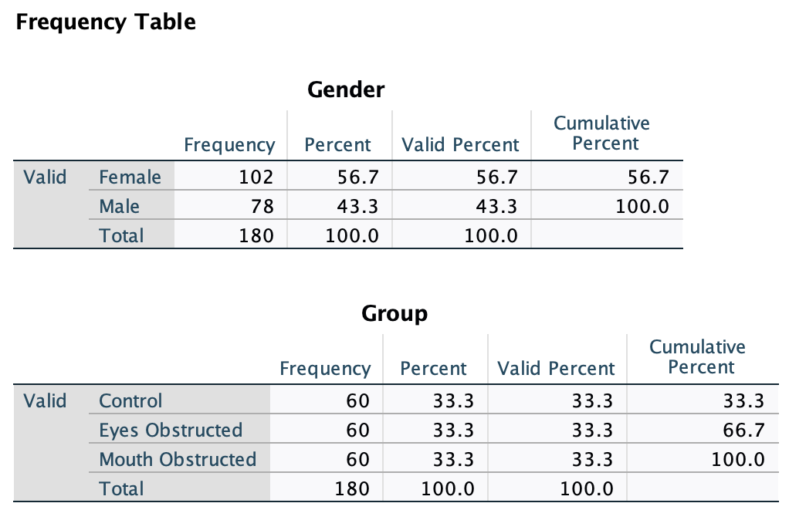
Note that if you set up the labels for the Gender variable properly,
you should see ‘Female’ and ‘Male’ in the frequency table for
Gender, rather than ‘1’ and ‘2’.
Continuous Variables: Your categorical variables are
Age and Correct. Click
Analyze>Descriptive Statistics>Frequencies, then add
these two variables to the ‘Variable(s)’ box. Make sure ‘Display
frequency tables’ is not ticked, then click ‘Statistics’. Tick ‘Mean’,
‘Std. Deviation’, ‘Minimum’, and ‘Maximum’. Click ‘Continue’, then ‘OK’.
You should see the following output:

Produce
Distribution Plot
You can also use Analyze>Descriptive
Statistics>Frequencies to produce a distribution plot. Add
Correct to the ‘Variable(s)’ box, then click ‘Charts’. As
Correct is a continuous variable, you will visualise it
using a histogram. Click ‘Histogram’, then tick ‘Show normal curve on
histogram’. Click ‘Continue’ and then ‘OK’.
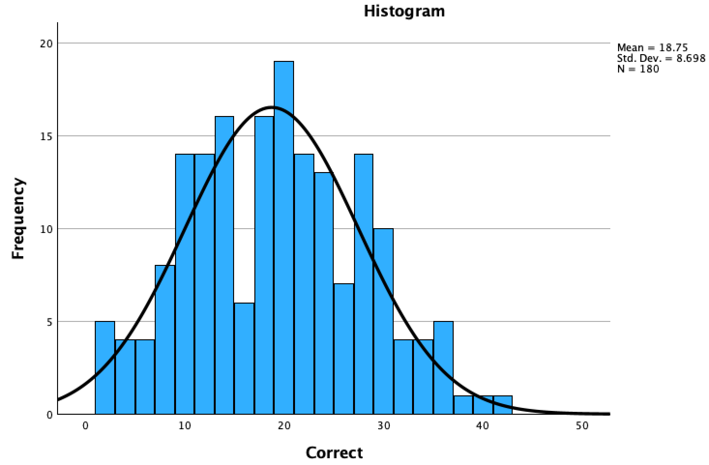
Here, you can have a look at your dependent variable’s distribution. There are no concerning outliers or unusual values, so you can move forward with assumptions checks.
Experiment 1 Assumptions
The requirements/assumptions of a One-Way ANOVA are:
Normality: Values are normally distributed within levels
Independence of Observations: Individual observations should not be dependent upon any others
Homogeneity of Variance: Variances within each level should be generally similar
The dependent/outcome variable must be continuous and the independent/predictor variable must be categorical
Your Tasks
\(\ \) Decide whether your data meet the assumption of normality
\(\ \) Decide whether your data meet the assumption of independence
\(\ \) Decide whether your data meet the assumption of homogeneity
Click here for a hint
Have a look at the lecture slides if you’re lost. Because normality must be tested within levels, you should use Analyze>Descriptive Statistics>Explore to get the plots you need.
Click here for the solution
To check the assumptions of normality and homogeneity, click Analyze > Descriptive Statistics > Explore and add your dependent variable to the ‘Dependent List’ box and your independent variable to the ‘Factor List’ box. Click the ‘Plots’ button on the right. Under ‘Boxplots’, select ‘None’, under ‘Descriptive’, tick ‘Histogram’, and tick ‘Normality plots with tests.’ Under ‘Spread vs Level with Levene Test’, click ‘Power Estimation’
Click ‘Continue’ and then ‘OK.’
Normality
Have a look at the histograms and Q-Q Plots.
Remember that normally distributed data will be primarily clustered around the mean, with ends tapering off on either side. The histograms show that the data generally follow this pattern across the levels:


However, they are perhaps very slightly flatter than would be expected, so the Q-Q plots can help bolster our confidence that the data are sufficiently normally distributed:


Here you can see that the points follow the diagonal pretty closely, so we’ll consider the data to have met the normality assumption.
Independence
Assessing independence requires you to have an understanding of the conditions under which your data were collected. The study design (between-participants) increases the likelihood that the observations are independent of each other, so you can consider this assumption to be met.
Homogeneity of Variance
Find the box in the output labeled ‘Test of Homogeneity of Variance’ and check the row labeled ‘Based on Mean’. If Levene’s statistic is not significant, we can assume that our data meet the homogeneity of variance assumption. Here, the \(p\)-value is greater than the threshold of .05, so this test is not significant.
Experiment 1 Analysis
As you are comparing three independent means, you’ll use results from a One-Way ANOVA to provide statistical support for your hypothesis. Recall that you’re testing the following hypothesis:
\(H_1\) - At least one of the following is true:
- \(\mu_{Control} \neq \mu_{EyesCovered}\)
- \(\mu_{Control} \neq \mu_{MouthCovered}\)
- \(\mu_{MouthCovered} \neq \mu_{EyesCovered}\)
Your Tasks
\(\ \) Run a One-way ANOVA to test your hypothesis and interpret the results with \(\alpha\) = .05.
\(\ \) Compute the effect sizes and confidence intervals associated with your analysis
Click here for a hint
Before running the analysis, you will need to transform you independent variable into numeric form. You can do this using Transform>Recode Into Different Variables. You have 3 categories (‘Control’, ‘Eyes Obstructed’, ‘Mouth Obstructed’) that need to be recoded.
Click here for the solution
ANOVA requires that you use a number for your independent variable,
Group, even though it’s categorical. Navigate to
Transform>Recode Into Different Variables. Add
Group into the box, then type a name (e.g., ‘GroupNum’)
into the ‘Name’ box in the ‘Output Variable’ section. Click ‘Change’.
Next, click ‘Old and New Values’. Add the old category label (e.g.,
‘Control’) to the ‘Value’ box in the ‘Old Value’ section, then add a
number to assign that category to in the ‘New Value’ section. Remember
that you must enter the category label exactly as it is
represented in the data, and this process is case-sensitive. Click
‘Add’, and you’ll see it appear in the ‘Old –> New’ box. Do this
until you’ve assigned all three categories to a number.
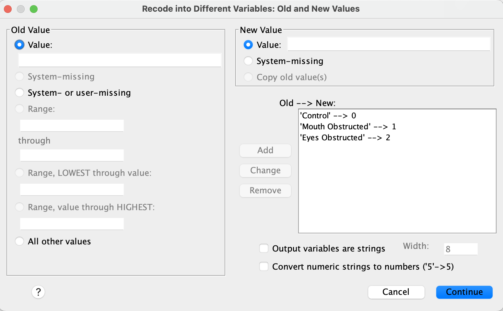
Click ‘Continue’ and then ‘OK’. You’ll notice a new column appear in
the Data View window. It will default to 2 decimals, so if
you’d like to adjust it to 0, go to Variable View and change
the value in the ‘Decimal’ column for GroupNum to 0. You
can also add labels to your new numeric variable, so that when you run
your tests later, the label will be used in the output, making it easier
to interpret your results.
Once you have your Group variable transformed into a
numeric value, navigate to Analyze>Compare Means &
Proportions>One-Way ANOVA. Add your new number column,
GroupNum, to the ‘Factor’ box, and add Correct
to the ‘Dependent List’. Make sure ‘Estimate effect size for overall
tests’ is ticked. To get the post-hoc comparisons, click ‘Post-Hoc’,
then ‘Tukey’. Under ‘Options’, click ‘Descriptive’. You can also tick
‘Means plot’ to generate a boxplot of the means of each group. Click
‘Continue’ and then ‘Ok’.
You’ll see the following output for your One-Way ANOVA:
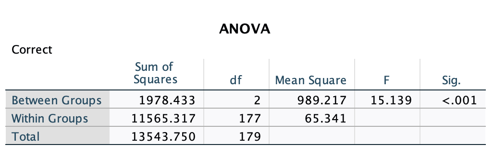
If you look at the .sig column, you can see that the \(p\)-value is less than .001, which is smaller than our \(/alpha\) threshold of .05. This means that our results are significantly. Specifically, there is a less than 0.1% chance that we would have differences this large in recognition between facial obstruction groups if the null hypothesis were true. This tells us that there is a significant difference in the case of least one of our pairings. To get a sense of how meaningful this difference is, we check the effect size.
Although there are several effects reported, you can use the effect size \(\eta^2\).
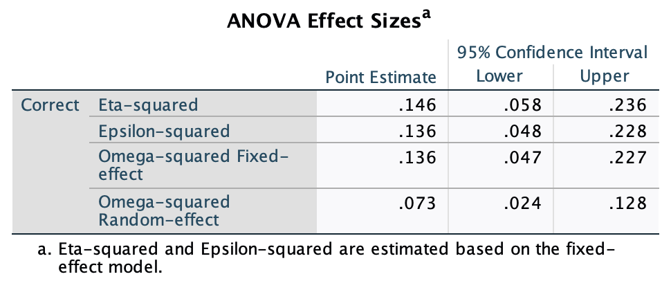
\(\eta^2\) has the following interpretation standards:
| Strength | Magnitude of \(\eta^2\) |
|---|---|
| Weak | \(\leq\) .01 |
| Moderate | \(\approx\) .06 |
| Strong | \(\geq\) .14 |
The value for \(\eta^2\) in this analysis is .15, which would be considered a strong effect.
These tables provided the results and effect size from the overall
group comparison, but it’s important to understand which groups are
actually different from each other. To determine this, post-hoc analysis
should be conducted. If you checked the Tukey’s posthoc option when
setting up your analysis (and added labels to your GroupNum
variable), you should see the following output:
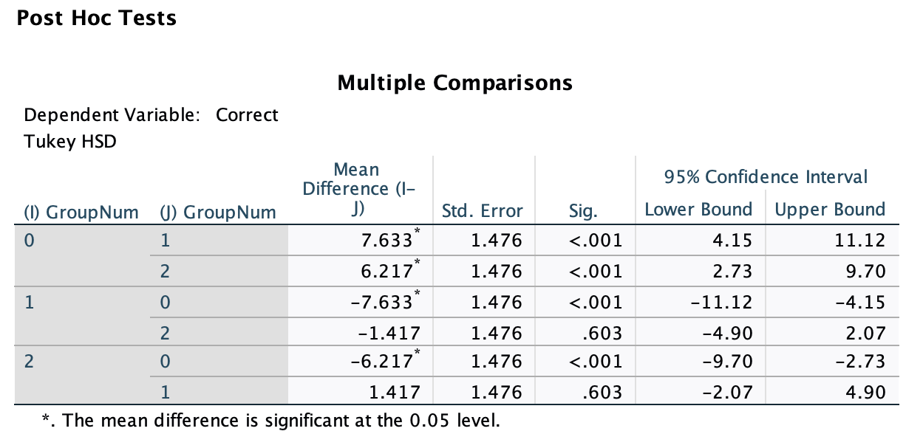
If you don’t see the labels and instead see numbers in the first two
columns, it just means you didn’t actually add labels to your
GroupNum variable in Variable View. The results
should still look the same.
Here, we can see that two of our three comparisons are significant, while the third is not. Specifically, both obstruction groups are significantly different from ‘Control’ (both \(p\) < .001). The mean difference column gives us the direction and magnitude of the difference between groups. In this instance, those in the control group correctly identified, on average, 7.63 and 6.22 more emotions in the images than those in the Eyes Obstructed and Mouth Obstructed groups, respectively. However, those in the Mouth Obstructed group only correctly identified, on average, 1.42 more emotions than those in the Eyes Obstructed group. This difference was not significant, \(p\) = .603, and should not be interpreted further.
Experiment 1 Interpret & Report
Now that you’ve completed the analyses, write a mini results section describing your findings. In this section, please:
Give a brief description of your sample as you would in a methods section.
Report your results and a provide interpretation in APA style.
Click here for a hint
There are many ways you could write this up, but you’ll need to at least include the following information:
- alpha level
- power analysis information (including effect size, sample size, power, and alpha)
- number of participants (n)
- participant demographics (mean age, age sd, and age range of sample; gender distribution of sample)
- results from assumptions checks
- descriptive data for each IV group (M and SD)
- the type of test used (one-way or repeated measures?)
- independent and dependent variables tested
- \(F\)-statistic
- degrees of freedom
- p-values
- confidence intervals
- effect sizes
The proper style of reporting the results from an ANOVA looks like this:
\(F\)([between groups \(df\)], [within groups \(df\)]) = [\(F\)-statistic], \(p\) = [\(p\)-value], 95% CI = [[lower band of CI], [upper band of CI]], \(\eta^2\) = [\(\eta^2\) value].
Note that the numbers inside the curly brackets refer to the degrees of freedom. ANOVA has two types of \(df\) that should be reported. Please refer to the lecture slides for a specific example.
Click here for the solution
In this study, we tested children’s ability to recognise emotions in images where different areas of the face were obstructed. We hypothesised that there would be a difference in recognition depending on whether the image was unobstructed, was wearing a mask, or was wearing sunglasses. To test this, we performed a One-Way ANOVA with type of facial obstruction (3 levels: none/control; eyes; mouth) as the independent variable and number of correct emotional identifications as the dependent variable. \(\alpha\) was set at .05 for all analyses. An a priori power analysis indicated that 158 participants were sufficient to detect a moderate effect (\(\eta^2\) = .06) with 80% power and \(\alpha\) = .05 using a One-Way ANOVA.
Our sample consisted of 180 children between the ages of 6 and 13 (\(M\) = 9.37, \(SD\) = 2.01; 102 females, 78 males). Assumptions checks were conducted through visual assessment. All data met the assumptions of normality, independence, and homogeneity of variance.
Type of facial obstruction had a significant effect on emotion identification, \(F\)(2, 177) = 15.14, \(p\) < .001, \(\eta^2\) = .15 Specifically, those who viewed images with eyes obstructed (\(M\) = 15.73, \(SD\) = 7.84) recognised significantly fewer emotions in images than the control group (\(M\) = 23.37, \(SD\) = 9.16), \(p\) < .001, 95% CI = [4.15, 11.12]. Those who viewed images with the mouth obstructed (\(M\) = 17.15, \(SD\) = 7.12) also recognised significantly fewer emotions in images than the control group, \(p\) < .001, 95% CI = [2.73, 9.70]. There was no significant difference between the two obstruction groups, \(p\) = .603, 95% CI = [-2.07, 4.90].
Bonus Material: Repeated-Measures ANOVA
In the second experiment, you investigated whether a mask differentially effects a child’s ability to recognize specific emotions. You recruited a new sample of primary-school aged children. All participants were presented with photos of masked people making stereotypical facial expressions associated with 5 different emotions (happiness, sadness, fear, anger, disgust). All participants viewed 50 photos per emotion. Photos were presented in random order for each participant.
You can download the dataset from the second experiment here. It contains the following variables:
| Variable Name | Description |
|---|---|
| ID | Participant ID |
| Gender | Levels: 1 = Female; 2 = Male |
| Age | Age in years |
| Happiness | Total number of correctly identified photos where the subject was emoting happiness; possible scores = 0-50 |
| Sadness | Total number of correctly identified photos where the subject was emoting sadness; possible scores = 0-50 |
| Fear | Total number of correctly identified photos where the subject was emoting fear; possible scores = 0-50 |
| Anger | Total number of correctly identified photos where the subject was emoting anger; possible scores = 0-50 |
| Disgust | Total number of correctly identified photos where the subject was emoting disgust; possible scores = 0-50 |
Your Tasks
\(\ \) Task 1: State your research question and hypotheses and identify your independent and dependent variables
\(\ \) Task 2: Check Experiment 2 data
- Are variables coded correctly in SPSS?
- Produce frequency tables for categorical variables
- Compute the mean, standard deviation, minimum, and maximum on continuous data
- Are there any missing values or outliers?
\(\ \) Task 3: Check Experiment 2 assumptions
- Normality - the distribution of your recognition variables should be normal
- Sphericity - the variances of the differences between each group combination are generally equal
\(\ \) Task 4: Run a repeated-measures ANOVA to test your hypothesis; make sure to also check the effect size and 95% confidence intervals
\(\ \) Task 5: Report your results using APA style
Click here for a hint
Task 1
Have a look at the lecture slides if you need guidance here.
Task 2
You can follow the steps from Experiment 1 Data Review
Task 3
As usual, you can use histograms and Q-Q plots to assess the normality of each of your recognition variables. To assess sphericity, you can use Mauchly’s test of sphericity.
Task 4
To perform a repeated-measures ANOVA, navigate to Analyze > General Linear Model > Repeated Measures.
Task 5
See the hint from Experiment 1 Interpret & Report.
Click here for the solution
Task 1
Research Question: Does a child’s ability to recognise emotions in masked individuals differ across emotions?
Variables
Independent Variable: Type of Emotion (5 Levels: Happiness/Sadness/Fear/Anger/Disgust)
Dependent Variable: Correct Identification of Emotion
Hypotheses:
Null hypothesis: There is no effect of emotion type on a child’s ability to recognise emotions in masked individuals.
\(H_0: Recognition_{Happiness} = Recognition_{Sadness} = Recognition_{Fear} = Recognition_{Anger} = Recognition_{Disgust}\)
Alternative hypothesis: There is an effect of emotion type on a child’s ability to recognise emotions in masked individuals.
\(H_1:\) at least one \(\mu \neq\) the other \(\mu s\)
Task 2
Navigate to Variable View and check the variable measures.
In this instance, ID could be changed to an ordinal
variable, but the others are all accurate. You could add labels to your
gender variable using the ‘Values’ column if you’d like. You can check
the frequency of participants in each level of the categorical
Gender variable by clicking Analyze>Descriptive
Statistics>Frequencies, moving Gender into the
‘Variable(s)’ box, then clicking ‘Ok’. In this case, you’ll note that
you have more females than males in your sample.
To check the descriptives of the continuous variables
Age, Happiness, Sadness,
Fear, Anger, and Disgust, click
Analyze>Descriptive Statistics>Frequencies, remove
infantGender from the Variable(s) box and add the
continuous variables instead. Make sure to untick the ‘Display Frequency
Tables’ box. Click ‘Statistics’ and then click ‘Mean’, ‘Std. Deviation’,
‘Minimum’, and ‘Maximum’. Click ‘Continue’ and then ‘OK’. You should get
the following output:
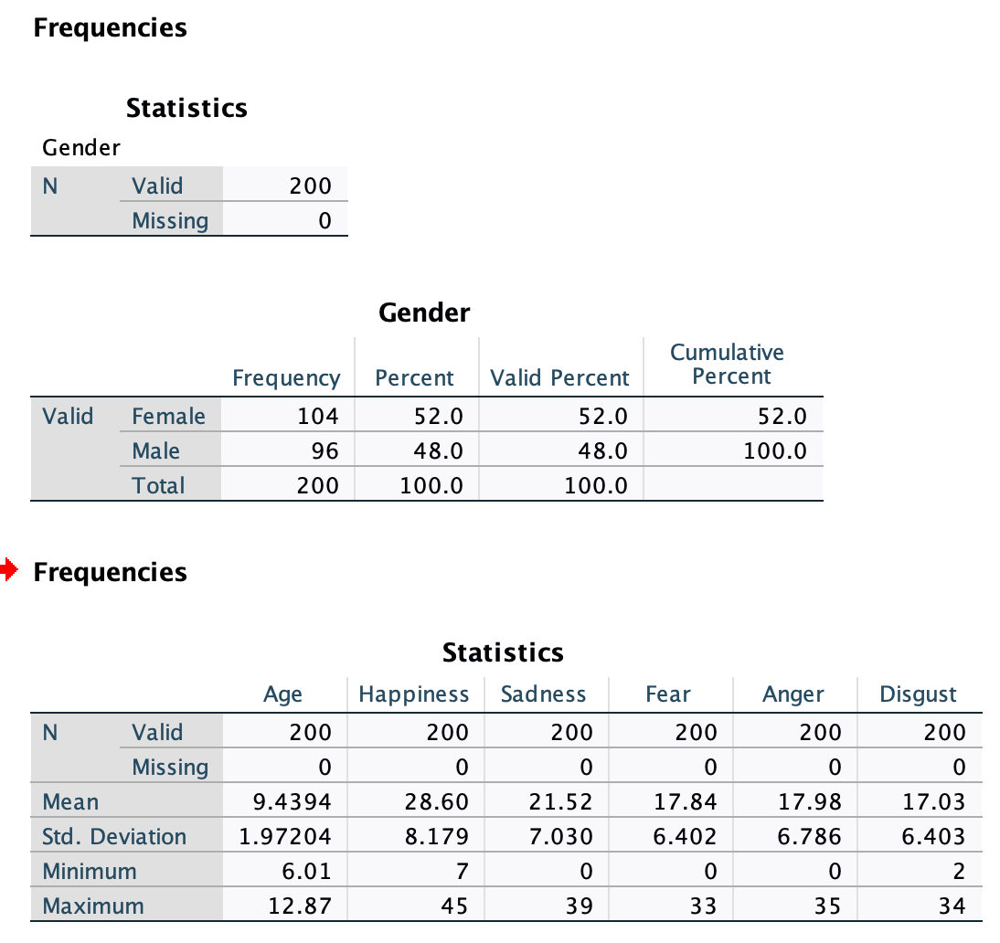
Looking at the output shows that all recognition values fall within the expected range (between 0 and 50) and ages range between 6 and 12 (the expected range for our sample). There are no missing values. We can move forward with assumptions checks.
Task 3
Normality
Produce histograms for each recognition variable by navigating to
Analyze>Descriptive Statistics>Frequencies. Add
Happiness, Sadness, Fear,
Anger, and Disgust to the Variable(s) box.
Click ‘Charts’, then check ‘Histograms’ and tick ‘Show normal curve on
histograms’. Click ‘Continue’ and ‘OK’. Note that you could have
completed this step alongside the previous step.
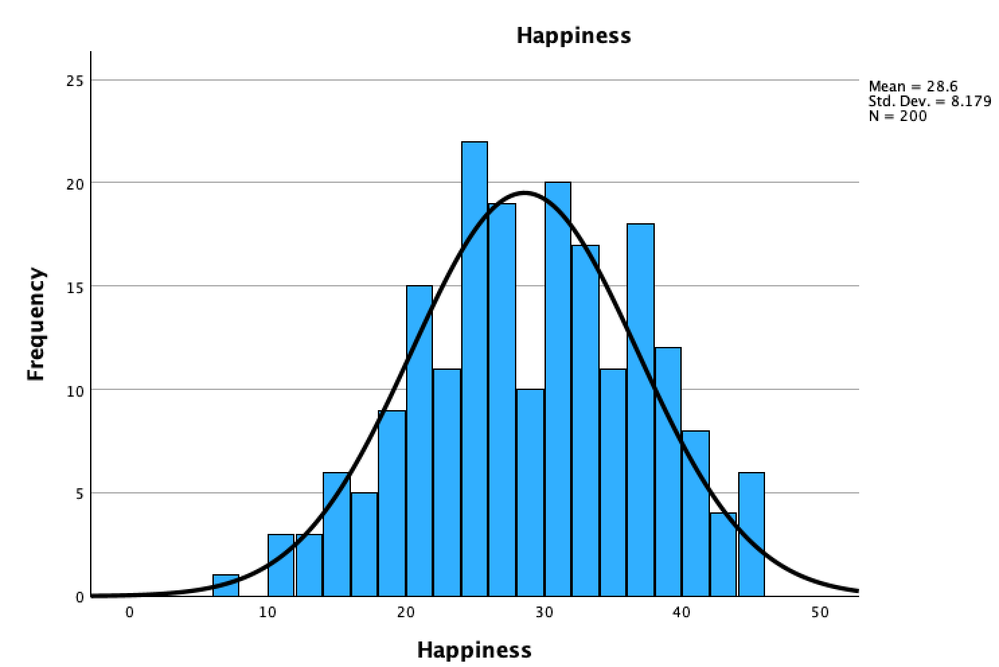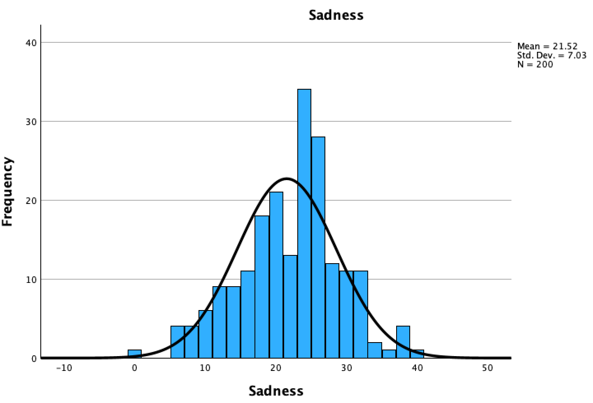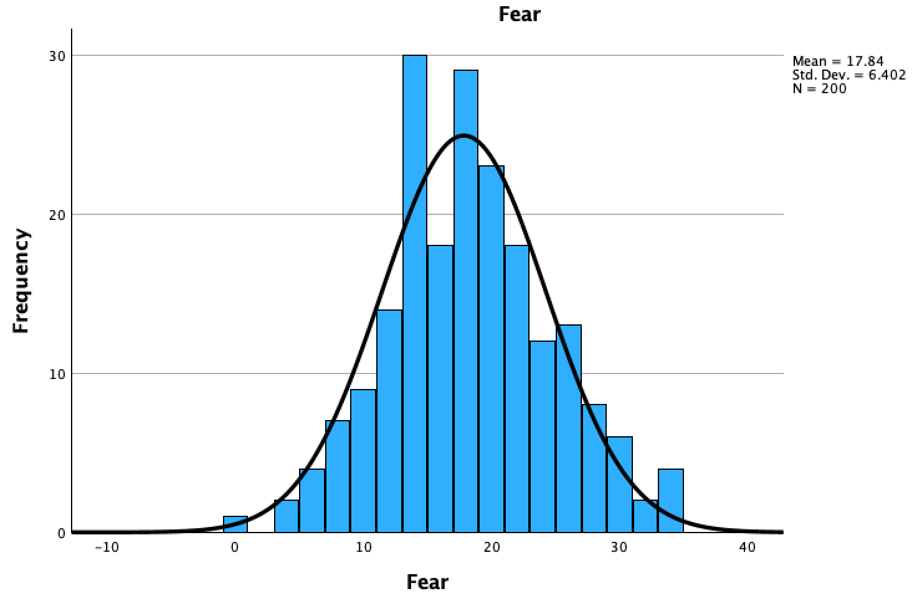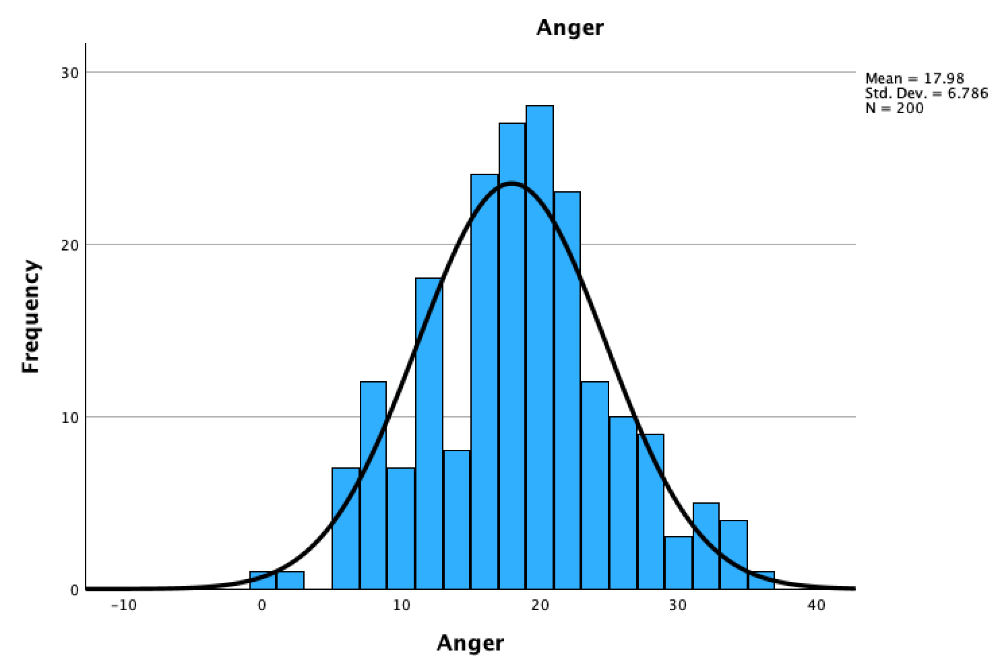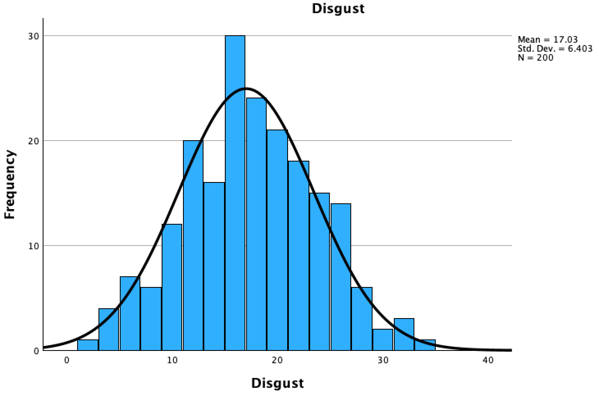
The data generally follow the normal curve (black line), so normality
can be assumed. However, it’s still good to check the Q-Q plots to be
certain. Navigate to Analyze > Descriptive Statistics > Q-Q
Plots. Add Happiness, Sadness,
Fear, Anger, and Disgust to the
Variable(s) box. Confirm that the ‘Test Distribution’ is set to ‘Normal’
and then click ‘OK’. Ignore all output aside from the Normal Q-Q plots.
Data that are generally normal will more closely follow the black
diagonal.
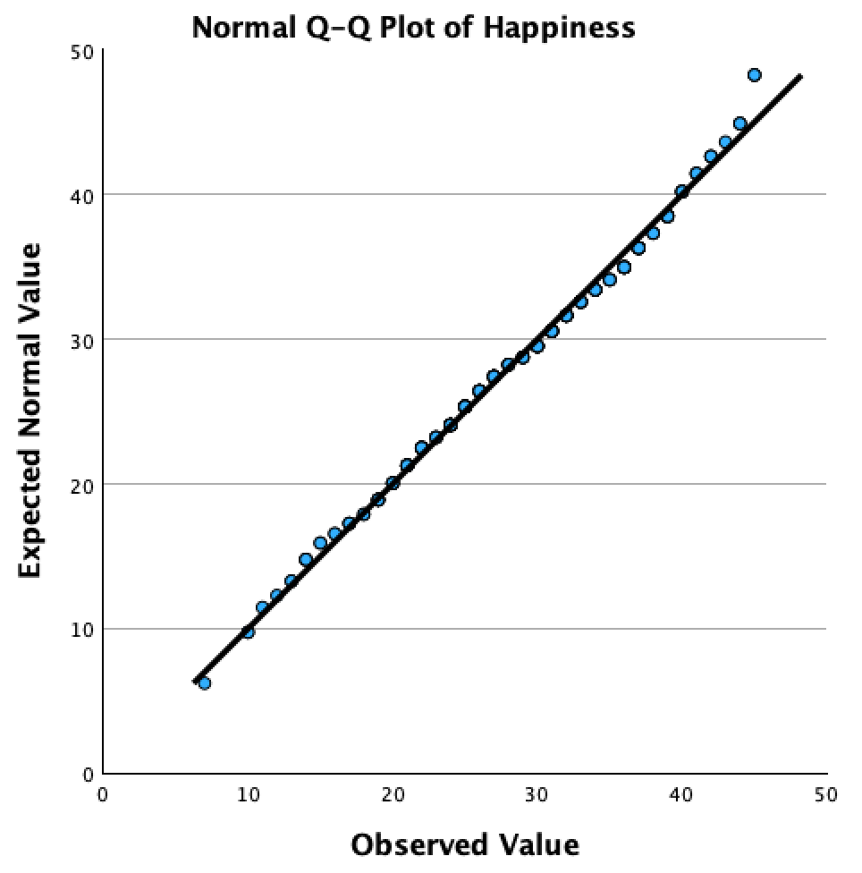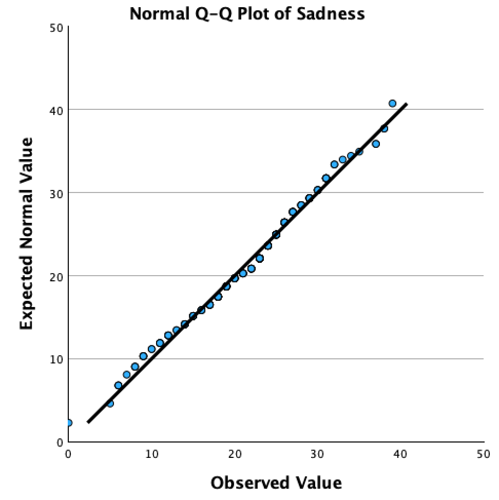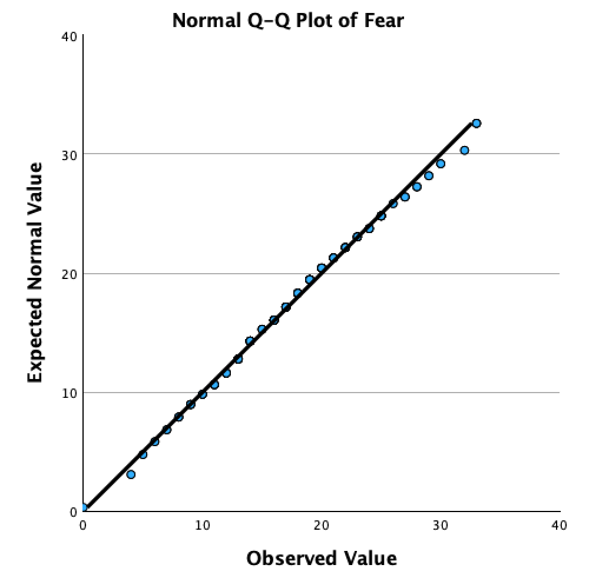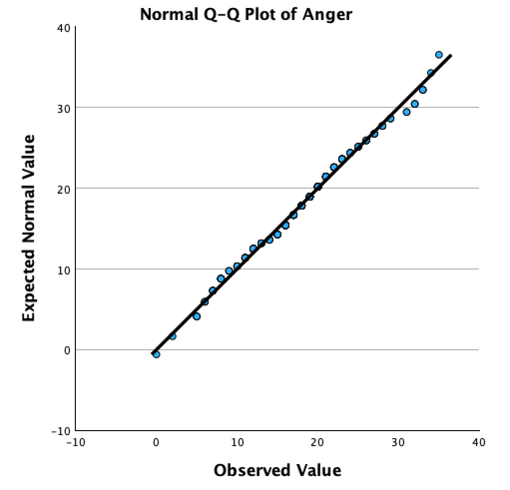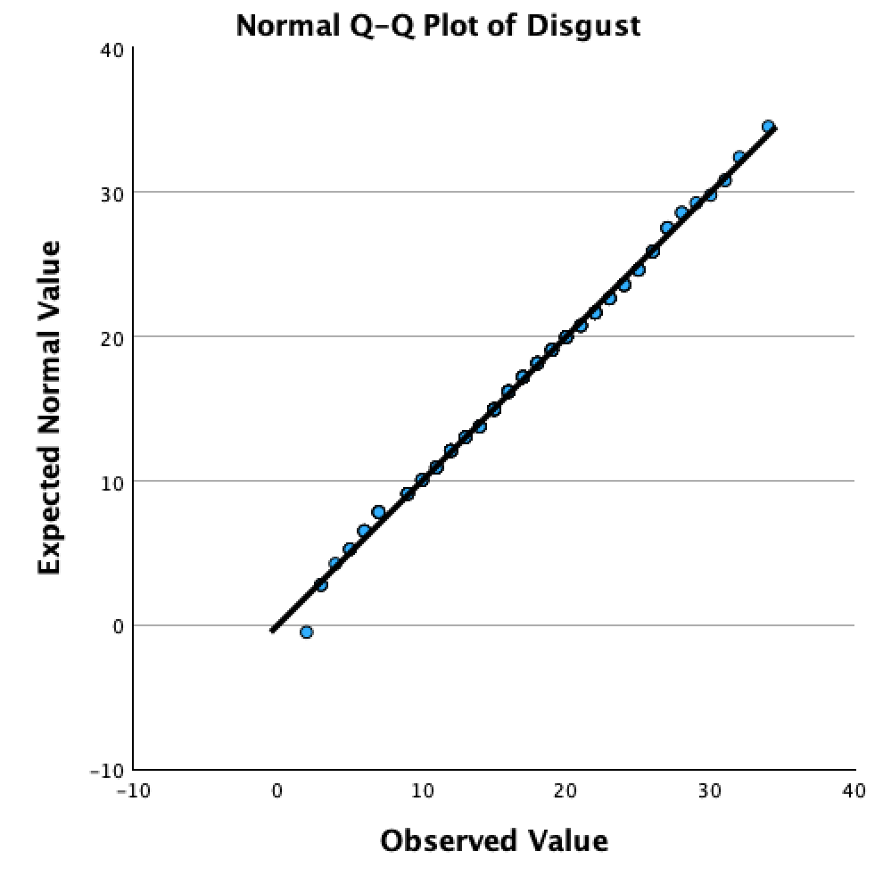
These all look ok; points follow the black diagonals relatively closely.
Sphericity
To test the assumption of sphericity, you can use Mauchly’s test. This test is computed automatically when you run your Repeated-Measures ANOVA. When you run the test, you will view this output to determine whether sphericity has been violated:
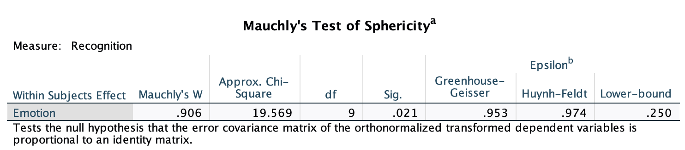
The \(p\)-value for this test is provided in the ‘Sig.’ column. If \(p\) is less than the \(\alpha\) threshold of .05, this test is significant and sphericity is violated. In this instance, \(p\) = .021, suggesting that sphericity is violated. This can be addressed when interpreting the results from the ANOVA.
Task 4
Navigate to Analyze > General Linear Model > Repeated Measures. Provide a name for your repeated measures variable in the ‘Within-Subject Factor Name’ box. In this example, I’ve used ‘Emotion’. Add the number of levels of your IV. In this example, you have 5 (Happiness; Sadness; Fear; Anger; Disgust). Next, you can add a label for your DV if you’d like in the ‘Measure Name’ box, but this is optional. I named my DV ‘Recognition’. Once you’ve added these to their respective boxes, click ‘Define’.
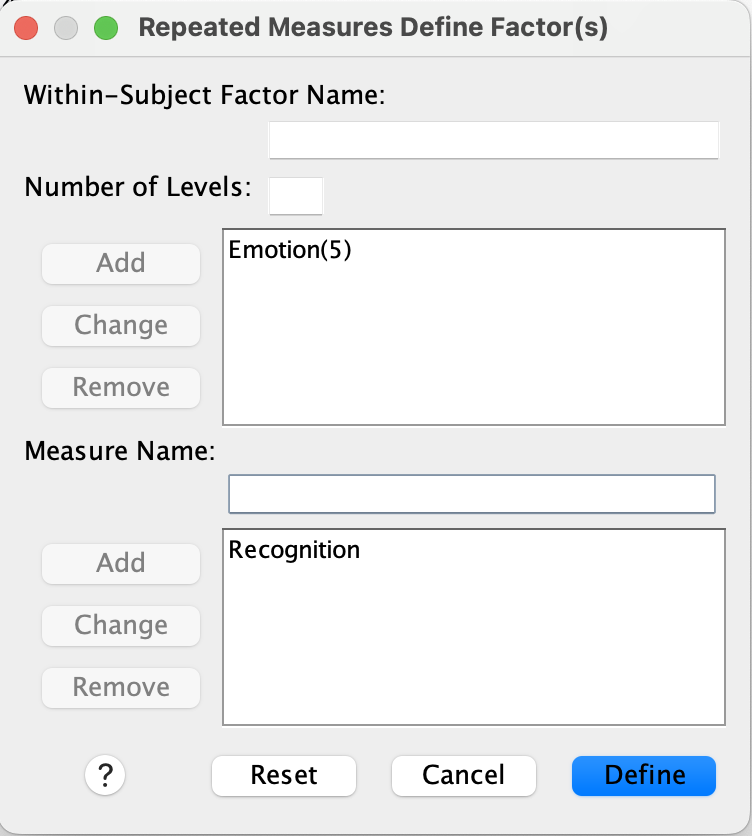
Add each of your 5 recognition variables to the ‘Within-Subjects
Variables’ box. To check for differences between each emotion, you’ll
need to click ‘EM means’ and add ‘Emotion’ to the ‘Display Means for’
box. Tick the ‘Compare main effects’ box, then select ‘Bonferroni’ under
the ‘Confidence interval adjustment’ dropdown. This allows you to
perform tests between each emotion, so that you can see, for example,
whether recognition scores for Anger are significantly
different from those for Happiness. The Bonferroni
adjustment is used to correct for multiple comparisons. Click
‘Continue’.
Next, click the ‘Options’ box. You’ve already calculated descriptive statistics (e.g., mean/sd) in an earlier step, so you can leave that blank. Click ‘Estimates of effect size’ to produce your effect size measures. Click ‘Continue’.
Optional: To do a quick and dirty visualisation of the differences between groups, click ‘Plots’ and add ‘Emotion’ to the horizontal axis. Click ‘Add’. Under ‘Chart Type’, click ‘Line Chart’. Make sure ‘Include Error Bars’ is ticked. The error bars can represent either the 95% confidence interval or the standard error, as long as you report it properly if you ever use the plot. I like to also tick ‘Include a reference line for the grand mean’. Click ‘Continue’.
Once you’ve set all of your desired options, click ‘OK’ to run the test.
Scroll down to Mauchly’s test. As noted in the previous step, it is significant, which means sphericity cannot be assumed. Continue to the next table, ‘Tests of Within-Subjects Effects.’
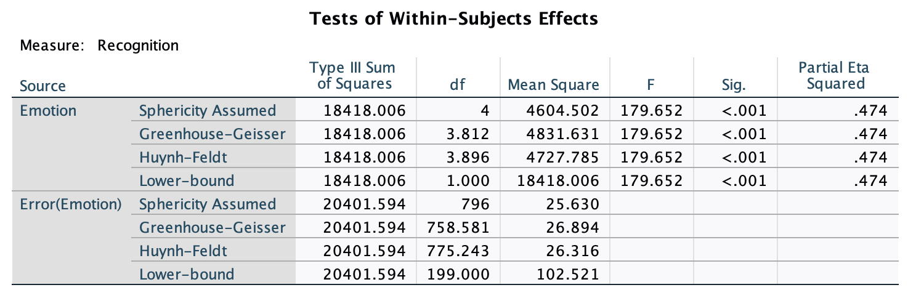
Because sphericity was violated, you cannot interpret the results on the line that says, ‘Sphericity Assumed.’ Instead, you should interpret the results from the line that says, ‘Greenhouse-Geisser’. The Greenhouse-Geisser method is a correction that adjusts data that lack sphericity so the results can be interpreted with confidence.
In this table, you can see that the \(F\)-statistic of 179.65 is much larger than the null value of 1, so, unsurprisingly, the \(p\)-value (< .001) is below the \(\alpha\) threshold of .05. We can consider the results to be significant. The effect size (\(\eta^2_p\), AKA partial \(\eta^2\)) is equal to .47, which is equivalent to a strong effect (see the solution box from Experiment 1 Analysis for interpretation standards). This tells us that the type of feeling being emoted does affect a child’s ability to recognise it in masked individuals.
To determine which emotions are significantly different from each other, scroll down to the ‘Pairwise Comparisons’ box.
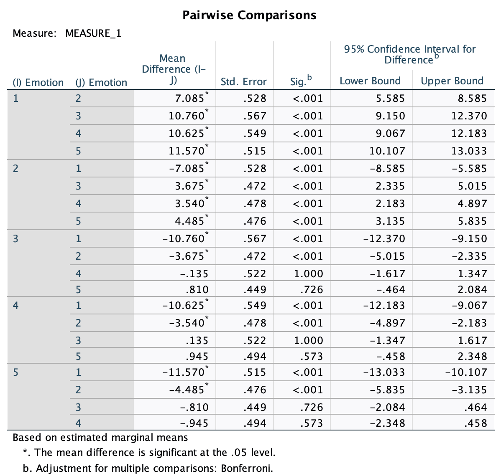
This can be a bit tricky to interpret, because it swaps all of the emotions to numbers. If you need to remind yourself which emotion is associated with which number, you can have a look at the ‘Within Subjects Factors’ box at the very top of the test output:
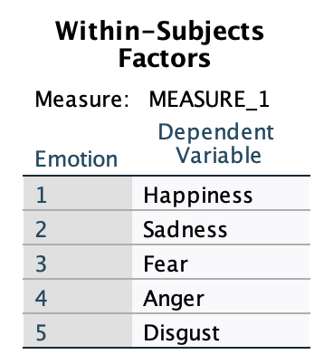
The first chunk shows the differences between Happiness
(Emotion 1) and all other emotions. We can see from the .Sig column that
all values of \(p\) are < .001, so
they are all smaller than the \(\alpha\) threshold of .05 and can be
considered significant. This means Happiness was recognised
at a significantly different rate than the other emotions. Looking at
the mean difference, we see that the values are positive, indicating
that Happiness was recognised significantly MORE often than
other emotions.
The second chunk shows differences between Sadness
(Emotion 2) and all other emotions. All \(p\)-values in the .Sig column are once
again < .001, indicating significance. Here, we see the mean
difference value in the comparison between Sadness and
Happiness is negative (children recognised sadness less
often than happiness), but positive in all other comparisons, suggesting
that children recognised sadness more often than Fear,
Anger, and Disgust.
The third chunk shows differences between Fear (Emotion
3) and all other emotions. You’ve already seen the results comparing
Fear to Sadness and Happiness, so
focus on the comparions between Fear, Anger,
and Disgust. Here, the comparison between Fear
and Anger is associated with a \(p\)-value of ~1, indicating there is no
significant difference in children’s recognition rates of these two
emotions. The same is true of the comparison between Fear
and Disgust; the \(p\)-value is equal to .726.
The fourth chunk shows differences between Anger
(Emotion 4) and all other emotions. Check the final comparison between
Anger, and Disgust. The associated \(p\)-value is .526, which indicates the
difference in recognition between these two emotions is not
significant.
To summarise, in this experiment, children viewing images of masked individuals recognised happiness significantly more often than all other emotions. They recognised sadness significantly more often than anger, fear, and disgust. There was no significant difference in their ability to recognise anger, fear, and disgust.
Task 5
In this study, we tested whether the type of feeling being emoted affected children’s ability to successfully identify it in masked individuals. We hypothesised that there would be an effect of emotion type on a child’s recognition ability. This study incorporated a within-subjects design, with emotion (5 levels: Happiness; Sadness; Fear; Anger; Disgust) as the independent variable and recognition scores (range = 0-50) as the dependent variable. \(\alpha\) values for all analyses were set at .05.
Our sample consisted of 200 children between 6.01 and 12.87 years old (\(M\) = 9.44, \(SD\) = 1.97; 104 females, 96 males). Normality checks were conducted through visual assessment of histograms and Q-Q plots. All data met the assumptions of normality. Mauchly’s test indicated that sphericity was violated (\(p\) = .021), so a Greenhouse-Geiser correction was applied.
A repeated-measures ANOVA indicated that emotion had a significant effect on recognition, \(F\)(3.81, 758.58) = 179.65, \(p\) < .001, \(\eta^2_p\) = .47. Pairwise comparisons with a Bonferroni correction indicated that happiness was recognised significantly more often than sadness (\(p\) < .001, 95% CI = [5.59, 8.59]), fear (\(p\) < .001, 95% CI = [9.15, 12.37]), anger (\(p\) < .001, 95% CI = [9.07, 12.18]), and disgust (\(p\) < .001, 95% CI = [10.11, 13.03]). Sadness was recognised significantly more often than fear (\(p\) < .001, 95% CI = [2.34, 5.02]), anger (\(p\) < .001, 95% CI = [2.18, 4.90]), and disgust (\(p\) < .001, 95% CI = [3.14, 5.84]). There was no significant differences in recognition rates between fear and anger, (\(p\) ~ 1, 95% CI = [-1.62, 1.62]), fear and disgust, (\(p\) = .726, 95% CI = [-0.46, 2.08]), or anger and disgust, (\(p\) = .573, 95% CI = [-0.46, 2.35]). See Table 1 for the mean recognition scores for each emotion.
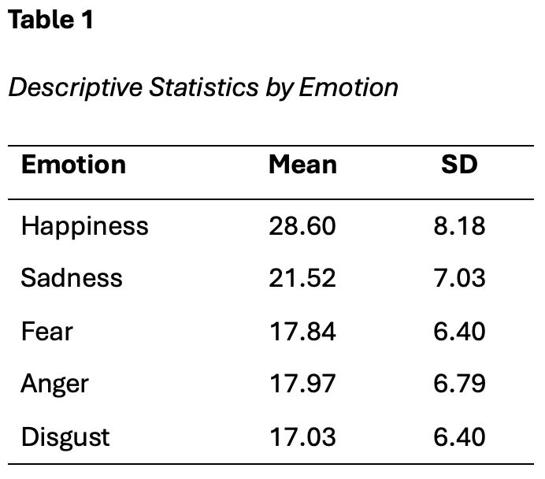
Bonus Material: Repeated-Measures Power Analysis
Recall the effect size measure for ANOVA, \(\eta^2\):
| Variable Name | Magnitude of \(\eta^2\) |
|---|---|
| Weak | 0.01 |
| Moderate | 0.06 |
| Strong | 0.14 |
Your Task
- \(\ \) Run a power analysis using \(\alpha\) = .05 and power = .8 to determine the sample size necessary to detect a moderate effect size ( \(\eta^2\) = .06) using a Repeated-Measures ANOVA. Note that WebPower uses \(f\) as its measure of effect size for ANOVA, so you’ll need to convert \(\eta^2\) to \(f\) before running the power analysis. You can do this with the following equation:
\[f = \sqrt{\frac{\eta^2}{1-\eta^2}}\]
Click here to use WebPower to run your analysis.
Click here for a hint
The value of \(f\) will be the same as the one you computed in Experiment 1 Power Analysis
If you’re completely lost, you might find the section on One-Way ANOVA in the WebPower manual helpful.
Click here for the solution
Navigate to the WebPower site and click Repeated Measures
ANOVA:
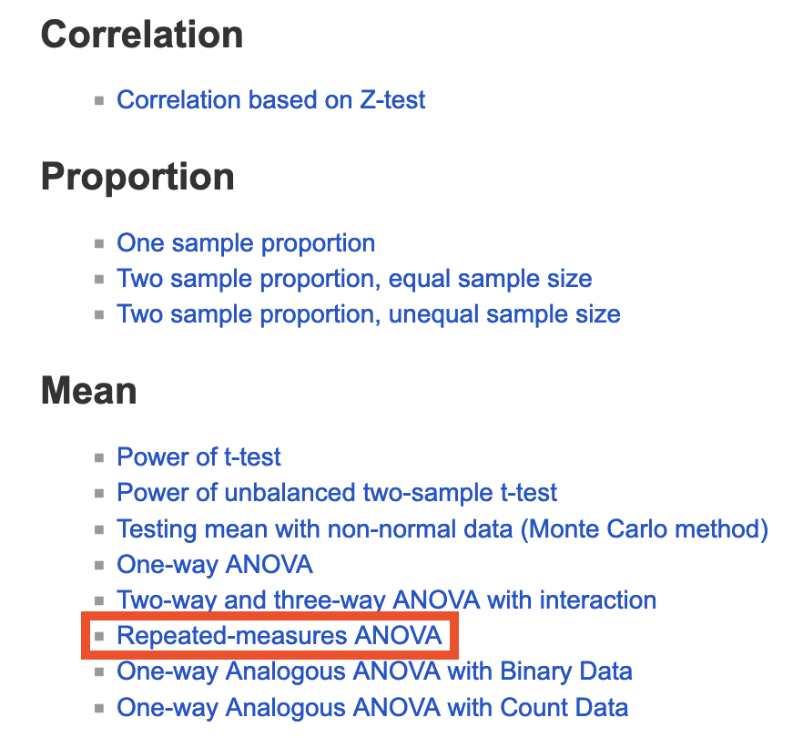
Number of groups refers to the number of independent
groups you’re comparing. In this case, you only have a single group, as
you have a repeated-measures design (you have an emotional recognition
score for each emotion from all participants). Number of measurements
refers to the number of values you have from each participant. In
this case, you have 5, as you have a score for each of 5 emotions
(Happiness; Sadness; Fear; Anger; Disgust) You’ll leave the Sample Size
option blank, as that’s the value you want to calculate. To compute the
effect size, \(f\), you’ll do the
following:
\[f = \sqrt{\frac{.06}{1-.06}} = .25\] You can enter in the appropriate values for \(\alpha\) (.05) and power (.8). When you’re finished, click ‘Calculate’ and you should see the following results if you’ve entered everything properly:
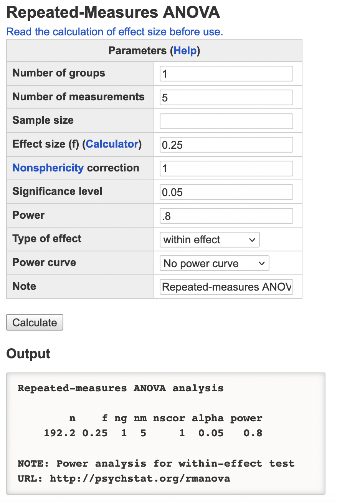
To report these results, you would say something like,
‘An a priori power analysis indicated that 193 participants was necessary to achieve 80% power to detect a moderate effect size (\(\eta^2\) = .06) with \(\alpha\) = .05 using a repeated-measures ANOVA.’